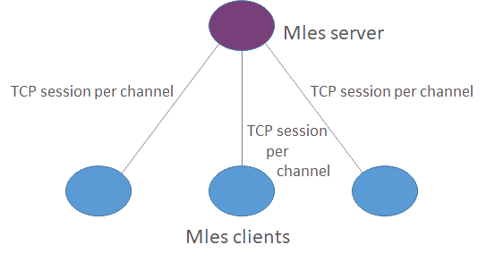
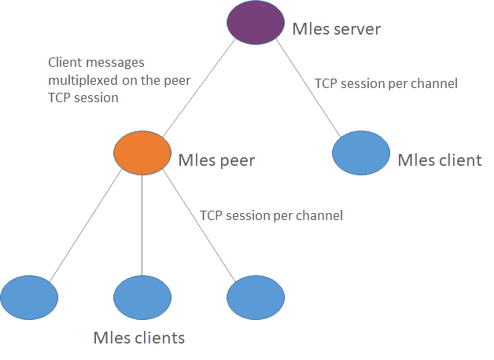

Mles (Modern Lightweight channEl Service) is a lightweight, robust and authenticated distributed publish-subscribe data service based on Rust (a safe, concurrent and fast systems language), Tokio (asynchronous networking for Rust) and Serde (serialization framework for Rust). It works seamlessly with IPv4 and IPv6 on TCP, which provides its reliable data transfer backbone on Rust supported platforms, including Linux, macOS and Windows.
Why Mles?
Mles provides a way to build a publish-subscribe service between clients which need a channel to exchange messages on in a reliable manner. Every connection also identifies the channel which provides an easy way for clients to open and close connections without additional messaging: just connect and send, and when done, close the connection. With advanced connection handling on top of Tokio futures, Mles should scale well even with a large number of connections. Clients may choose their internal data structure freely as it is transparent to Mles. Mles relies on a modern authentication mechanism which should perform well even with short inputs. Due to the lightweight design on Rust, the performance of Mles should be an improvement compared to existing options.
Mles overview
Mles protocol is based on TLS WebSocket session packet forwarding within the channel based on user identification and channel fields. The reference server implementation is fully safe Rust, lock-free (no blocking!) and supports strong session authentication between Mles client and server. With its two-layer authentication scheme (1st level: server-client, 2nd level: client-client) it provides a possibility for clients to authenticate each other independently from servers and also to build any additional protocol over Mles they may need. I.e. the clients may choose any data structure they wish to exchange messages with each other on top of Mles protocol.
Mles first frame data structure is based on JavaScript Object Notation (JSON). It consists of (uid, channel, auth) value triplet where uid and channel are UTF-8 strings and optional auth field can be used when authentication between client and server in addition to TLS is needed. This is the only mandatory message type that a client should be aware of. Additional internal message types like "join" or "leave" messages that would be forwarded internally do not exist. Moreover, Mles protocol does not have any flags by design which simplifies the message handling itself. In practice, after the first frame is authenticated, Mles server just forwards the next frames to all subscribers. Please see the Mles first frame protocol header below in Figure 1.
{
"uid":"<user identification>",
"channel":"<selected channel>",
"auth":"<optional authentication hash>"
}
Figure 1. Mles first frame JSON protocol header.
Mles protocol and its reference implementation are stable with v2.0 release. For more information about Mles reference implementation, see github.com/jq-rs/mles-rs and the mles.io/blog. For latest news, please check /c/mles channel.
Advanced features: Mles peers and message history
Mles servers may be connected by defining peer servers. A peer is a Mles server that is configured to be connected to another server and where clients can connect to. A peer forwards all client messages to their peer server and back. The Mles server sees the peer connection as just another client. This provides a simple but yet powerful way to distribute data between servers. The server, peers and clients form a tree-like structure to exchange messages. As it is possible to configure peers to a loop by accident, the Mles protocol provides loop protection with the help of internal connection hash comparison.
Mles servers and peers may also provide history information which provides a message history for new client connections. Compared to other protocols, Mles server does not try to hold a queue of messages and monitor the state of each message when has it reached all subscribers and can be removed from the queue. Instead, Mles server just resends the history available to lost and reconnected clients (which can be peers too). This makes the processing logic smooth and lightweight. The end result is that a client is guaranteed to receive all history information on the channel in case of connection loss when the client can reconnect. The client is also able to compare has there been new messages on the channel while the connection was lost. Based on the message history, the client can also figure out are some of its own sent messages lost and do they need resending. Naturally, not all clients need all these features which is one reason why Mles does not try to implement them for the clients.
In addition to distribution, the peers provide a way to offer resilience with resynchronisation message for the channel history information in case e.g. Mles root server restart during an upgrade. Clients may ignore this resynchronization messaging.
Use cases
It is important that any data can be distributed in a scalable and properly authenticated but still reliable way. These services can take advantage of using Mles as a backbone service. In a simple use case several clients are connected directly to a public server on their chosen channel (see Fig. 2).

Figure 2. Mles use case with directly connected clients
Another common use case is with more servers, a public server and a peer server. Clients may connect either to the peer or to the public server directly (see Fig. 3).

Figure 3. Mles use case with a peer
Any tree-like setup where you have a Mles server should work just fine.
Services that could have the benefit of the Mles could be e.g. configuration distribution or IoT telemetry. In general, any publish-subscribe service without the need of database on the service itself can be seen as a fine candidate as a use case, especially if it has a large number of clients with a limited number of channels to subscribe. As the mechanism for joining a channel is always per connection and channels cannot be multiplexed on the same connection, Mles may not be the best choice for a client which needs to connect to a very large number of channels.
Design notes on client layer protocol
Implementing a light client for Mles is straightforward as the client only needs to know which kind of data structure to use between other clients. However, with history information enabled, the client should expect the duplication of already received messages in case of errors on the data path where Mles is run. This should be taken into account while designing a client layer protocol. An easy way to identify retransmitted messages is to add a sequence number per user to the client layer protocol. The sequence number can be then used to identify already received messages and ignore them when necessary. It is also good to notice, that even though Mles is run on WebSocket which provides reliable streaming data service, it does not protect from data loss in case of a forwarding path failure. A client should be able to resynchronize to history and able to resend lost messages in case such reliability is needed.
Clients may also need to know who has subscribed current channel. To have this information, clients may monitor it from initial frames which are sent during a connection attempt to channel: even though the first authenticated message would be empty, this empty message with uid and channel information is received by all connected clients. If channel depart information is needed, either an own depart messaging can be designed, or a keepalive mechanism can be introduced on top of client layer protocol.
An open-source proof-of-concept client that has all of the above concepts implemented is used in MlesTalk application.
Future development
In the future, the reference implementation may be enhanced with performance and resiliency improvements. Other extensions may be considered too as long as they do not change the general principles of Mles.
Changes to the Mles protocol itself are not allowed after 2.0 release as a simple protocol means lightweight, compatible and understandable service. It may be sent to standardization to guarantee this.
On client side, of course, any new type of service can be introduced as a 2nd level service. New client layer protocol implementations are welcome to be shared as examples, please let us know if you invent such!